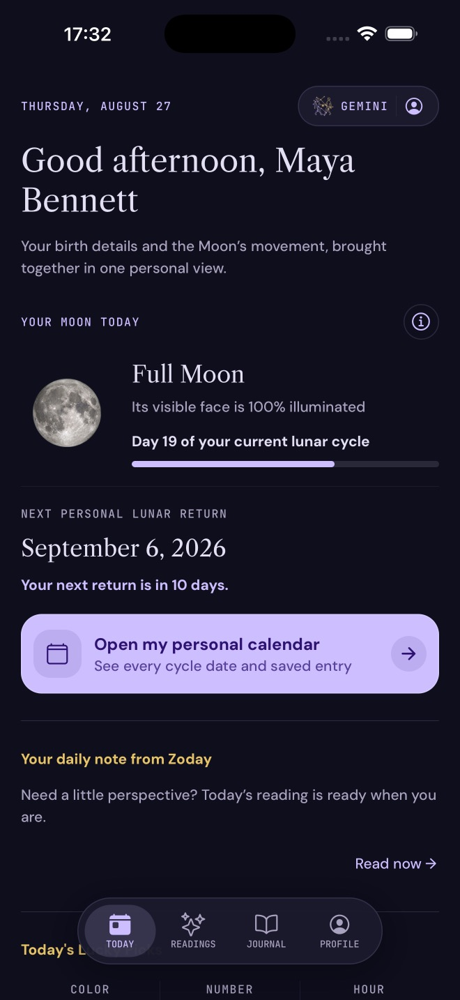
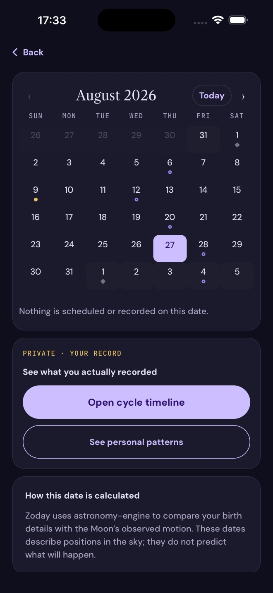
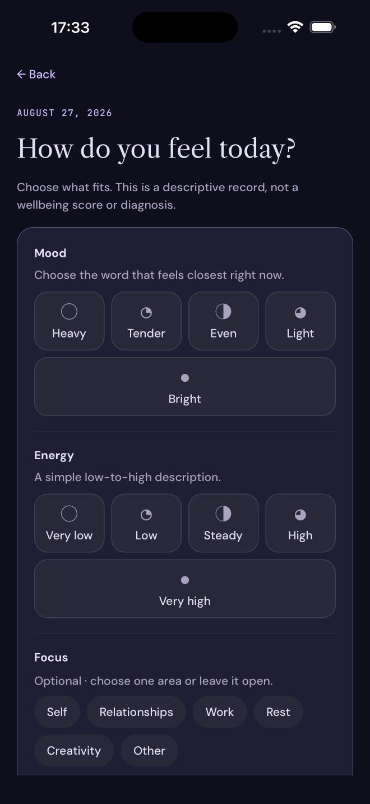
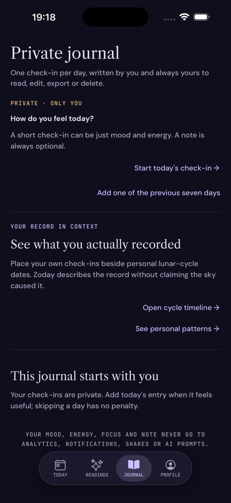
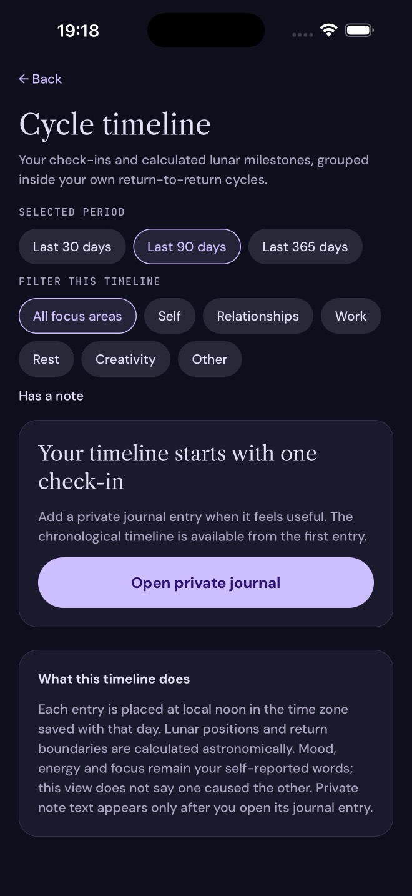

01 · CYCLE
Your lunar return
See where you are in your personal lunar cycle and the next date calculated from your birth details.
Read the daily horoscope for your sign, follow Moon phases and personal lunar-return dates, explore optional readings and keep a private journal in one place.
Start with the current horoscope for your zodiac sign, then see the current Moon phase, upcoming lunar events and your next personal lunar return. Zoday keeps shared sign content, general Moon phases and the return calculated from your birth details clearly distinct.
Use a daily check-in for mood, energy, focus and an optional note. You can edit, export or delete your entries and account from the app. Your journal and core calendar remain available without Zoday Plus.
Burcuna ait günlük yorumu oku; Ay evrelerini ve kişisel Ay dönüşü tarihlerini takip et; kendi gizli günlüğünü tut. Burç ve geleneksel yorumlar eğlence içeriğidir.
Calendar and journal utility come first. Each part works without a generated interpretation.
See where you are in your personal lunar cycle and the next date calculated from your birth details.
Follow current and upcoming Moon phases alongside your personal return dates, with an honest precision note when needed.
Record mood, energy, focus and an optional note for yourself. It is private, editable and available without Plus.
Review your own entries in a timeline, then export or permanently delete them whenever you choose.
These app screens show the personal lunar cycle, Moon calendar and user-authored reflection experience available in Zoday.





Your birth date starts the calendar. Birth time and place are optional, and let Zoday show a more precise personal return when available.
See the current Moon phase, major Moon phases and your next return. The calendar separates calculated celestial dates from your private records.
Make a daily check-in, add an optional note and look back in your own time. Personal patterns only appear after the app’s stated minimum sample is available.
Zoday keeps its traditional interpretation collection apart from the calendar and journal. It is not astronomical measurement or a prediction.
Optional personal readings and lunar narratives are available as entertainment, never as a factual account of your calendar or journal.
Four Pillars, Destiny Matrix and Loved Ones features remain separate from the primary experience and are clearly labelled as entertainment.
If you choose it for a traditional interpretation, device location is rounded on-device and used once for city, local-time and season context. It is not stored.
Traditional content is not medical, financial or legal advice, and it does not claim that celestial events cause feelings or outcomes.
Zoday has no advertising and does not sell personal data. It does use permission-controlled, limited product analytics and technical diagnostics to maintain the app.
Zoday creates a random app account ID on first launch. You can optionally protect and restore it with Apple on iPhone or Google on Android.
Journal values and notes are not sent to AI, analytics, notifications or sharing text. You can edit, export or delete them in the app.
With the usage-data setting on, PostHog receives limited screen and action events, while Sentry receives technical crash and performance diagnostics. Neither receives journal values or reading text.
Zoday does not run advertising or sell personal data. Its App Store privacy declaration does not identify tracking.
Approximate live location is only used for an optional traditional interpretation; selected-city context is handled as described in the privacy policy.
Turn off usage-data sharing, manage reminders, export data or permanently delete your account in the app.
Current prices and terms appear in the store before purchase. Zoday Plus is an optional monthly or annual auto-renewing subscription.
| Feature | Free | Zoday Plus |
|---|---|---|
| Personal lunar cycle and calendar | Included | Included |
| Daily check-ins and private journal | Included | Included |
| Edit, export and delete your own data | Included | Included |
| Cycle comparisons | Standard view | Longer comparisons |
| Personal lunar-return reminder | — | Optional 24-hour reminder |
| Traditional interpretation collection | Selected access | Expanded optional access |
Subscriptions renew automatically unless cancelled in the relevant store account settings before the current period ends. Store availability, price and terms may differ by platform and region.
No. Zoday starts with a random app account ID. On Android you can optionally use Google to protect and restore that account on another device.
No. Your core personal calendar, check-ins, private journal, editing, export and deletion remain available without Zoday Plus.
No. The daily horoscope is shared by zodiac sign and shown with its sign and date. Personal lunar-return dates use the birth details you deliberately save.
They describe averages and co-occurrences in your own saved check-ins after the stated minimum sample is available. They do not claim the Moon caused a feeling or outcome.
The older Google-backed Zoday account returns with its history. Anonymous data created on the current device is not automatically merged into it.
Manage or cancel an Android subscription in Google Play subscription settings. The app also provides Restore purchases if Plus has not appeared.
Yes. Zoday is publicly available on Google Play for supported Android devices.
They are optional, separate from your calendar and journal, and presented for entertainment rather than as astronomical measurement, prediction or advice.

Bugünün yorumunu oku, Ay takvimini takip et ve kendi günlüğünü tut.